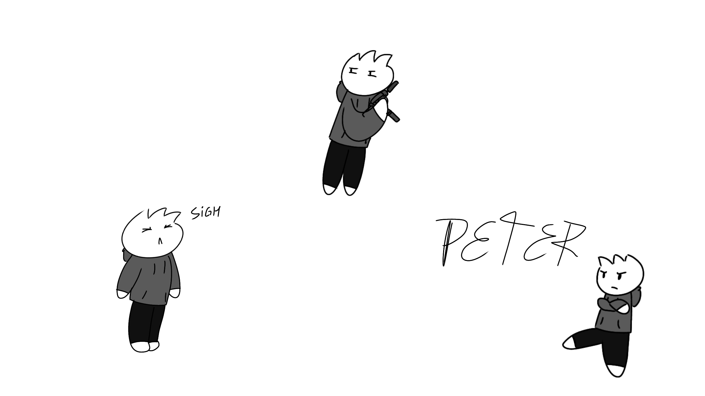

Name: Peter Kalinskaya

Birth Date: July 21, 2001
Gender: Male
Height: 1.60m/5'3"
Weight: 60kg/132lbs
pronouns: He/Him
Main Weapons: Pistol, Uzi
He is the serious one. Peter Kalinskaya is the most serious person among the three, he
usually tries to make the most rational
decisions while he has to deal with his chaotic group making
every situation chaotic. He was killed by the IHWH organisation,
making him an AI on a computer to steal
data from people and keep Abbie captive. But he was later brought back by Misha as a half human, half AI.